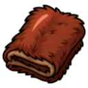

Wild Boar
Level 12 · 🌾 Ashvale
| Property | Value |
|---|---|
| Weakness | 🏹 Ranged |
| Hitpoints | 28 |
| Attack | 9 |
| Strength | 8 |
| Defence | 4 (+4 armour) |
| XP per kill | 80 |
| Slayer | 🎯 Scout Tomas gives tasks here (Slayer 5, combat 10) |
Drops
| Item | Amount | Chance |
|---|---|---|
| 1 | Always | |
 Boar Hide | 1 | 80% |
| 6–24 | 70% |